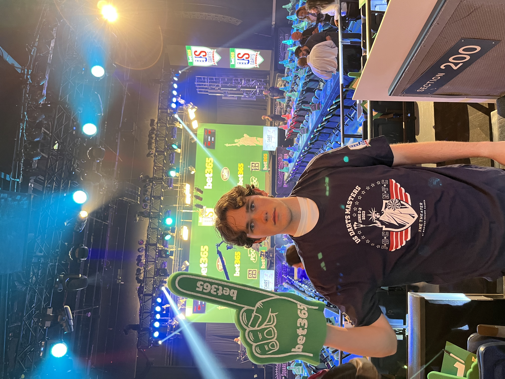

Soccer
I have loved playing and watching soccer for about 15 years. I still vividly remember watching the 2010 World Cup Final with my dad. I always used to administer recess pickup soccer in elementary school (until I got in trouble for giving someone a red card). As I grew older I began to yearn for competetion and began to play travel club soccer. My most meaningful playing days were in high school. The summer after my freshman year, I had the opportunity to play in a tournament in Iceland. My sophomore year we won the state championship and ended as a top 20 ranked team in the nation. My junior year, we lost in the semi finals, but I earned my team's defensive MVP award and all-state recognition. Senior year, I was voted as team captain, but unfortunately a knee injury sidelined me for the majority of the year. I came back in time for playoffs and we made it to the state final, losing after 13 rounds of penalty kicks following a 120 minute 2-2 stalemate. I have also served as a referee for youth soccer games and a coach for a local youth soccer camp. I always look back on my soccer playing days with great fondness.


Darts
During Covid, my dad got a dartboard for our basement. Ever since, it has become an obsession. I could stand and throw darts at the board for hours on end. Pretty quickly, I started closely following professional darts and learning about all the players. I rarely miss a match. When I came to college, I made sure to find out how to configure a dartboard in a cramped dorm. I don't think the residential life office appreciates when my friends play with me and miss the board. My playing career has yet to take off, but in April my dad and I are going to our first competetive tournament. We've only every played in our basement, so I have no clue what to expect. Every year, the PDC (Professional Darts Corporation) hosts a tournament in New York City, and last year my dad and I went for the first time (to watch, not play) and we're going again in May.

Squash
Up until last year, I had no idea how to play squash. I had only heard rumors of the sport. Luckily for me, my dorm neighbor was on the squash team, and eager to introduce me and my roommates to the sport. After a few sessions with him, I was hooked. I bought a racquet and shoes and I've played regularly ever since. This year, some friends and I decided to start a squash club on campus. We have biweekly meetings and in the future we hope to become more competetive and play against other schools.
Being in Nature
I love spending time outdoors. Whether it is a short walk, a long hike, a camping adventure, or simply just sitting in the sun, you can count me in. I love the smell of fresh air and the feeling of the sun on my skin. Some of my favorite times outdoors have been the camping trips I have gone on the past two summers. Two years ago, I drove to Shenandoah National Park, camping for 8 nights. Last year, I drove all the way from Vermont to Florida, camping as I went. On the way down, I stayed along the coast, but on the way back up, I went a bit more inland and stayed for a few nights in Great Smoky Mountain National Park.
Reading
Currently reading: The Fury by Alex Michaelides
Every night before bed I try to read for at least 30 minutes. I always looking forward to continuing my story at night. One of my favorite things to do in the summer is to get a blanket, find a patch of grass, and sit and read. There's something about being immersed in a book that feels very amazing to me. I enjoy general fiction, mystery, and memoirs. Below is a table of the past 5 books I have read, and my ratings.
My Last 5 Reads
| Author |
Title |
My Rating |
| Charles Belfoure |
The Paris Architect |
9.3/10 |
| Gina Chung |
Sea Change |
6.8/10 |
| Charles Yu |
Interior Chinatown |
9.0/10 |
| Quincy Troupe |
Miles & Me |
8.5/10 |
| Phil Taylor |
Staying Power |
7.1/10 |
Music
My household has always been very musical. My dad always plays music whenever he is cooking, cleaning, or doing pretty much anything else. When I was in middle school, I decided I wanted to learn how to drum and I have been playing ever since. In high school, I was in jazz band and an acapella group, and now I play in a MOBROC band at Conn. We don't have a name yet, but we're getting there. I enjoy nearly all types of music including but not limited to: jazz, funk, rock, and pop. Some of my favorite artists are Rush, Art Blakey, and Adele.
Filmmaking
I have always made silly little movies. When I was in middle school, I made Minecraft YouTube videos and I regularly posted a sitcom series titled "The Life of Garrett and Rodney" on my Instagram account. As I got older, I tried my hand at making some longer, more serious videos. I found a local documentary contest for young filmmakers, and entered on 3 separate years. My three entries, "Upper Valley Soccer", "A Meaningful Life: The Story of Dr. Albert Levis", and "Finding the Escalators of Vermont" all won awards. I took a film class at Conn, but I think filmmaking will remain a hobby rather than attempting to make it a career.